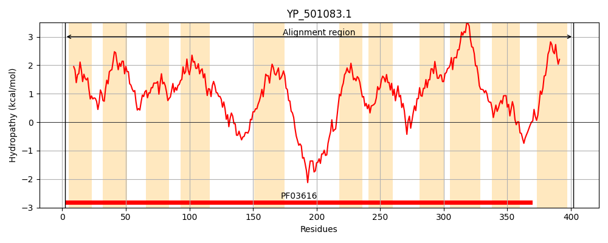
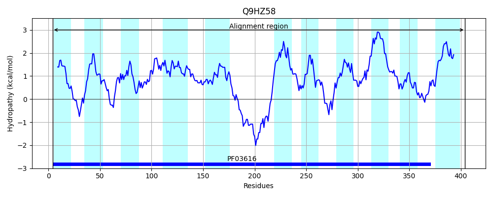
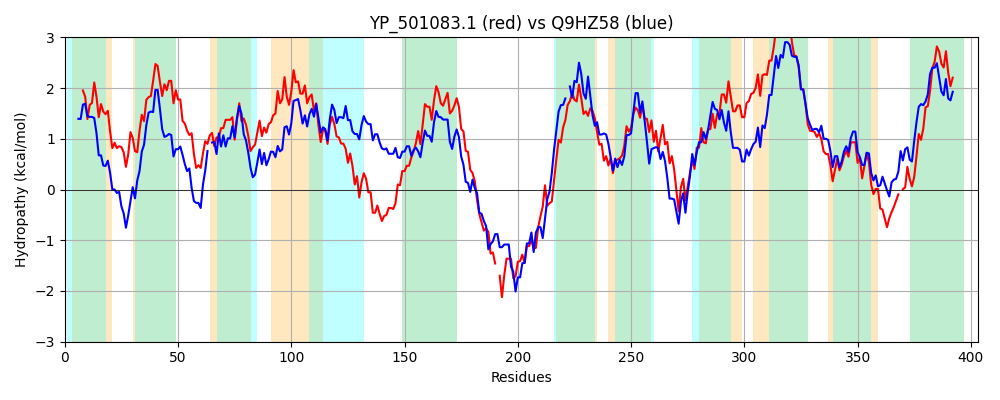

Hit Accession: Q9HZ58
Hit TCID: 2.A.27.1.3
Hit Description: gnl|BL_ORD_ID|18237 gnl|TC-DB|Q9HZ58|2.A.27.1.3 Glutamate/sodium ion symporter, GltS OS=Pseudomonas aeruginosa (strain ATCC 15692 / PAO1 / 1C / PRS 101 / LMG 12228) GN=gltS PE=4 SV=1
Mach Len: 403
e:0.000000
Query TMS Count : 11
Hit TMS Count: 11
TMS-Overlap Score: 9.700000
Predicted Substrates:CHEBI:21301;L-glutamate(1-)
BLAST Alignment:
Score: 806 , Bit scores: 315 bits, E-value: 8.7e-105, Alignment length: 403, Percentage identity: 41
Query: 2 IELNAITTLCLACILYLLGKAIVNHVNFLKRICIPAPVIGGLIFAILVAALDSFGMVKIKLDASFIQDFFMLAFFTTIGLGASLKLFKLGGKVLLLYFMFCAIISVIQNIVGVSLAKVLNIKPLLGLTAGSMSMEGGHGNAAAYGKTIQDLGIDSALTAALAAATLGLVFGGLIGGPVVKFLIKRYNLKPQ-HSDDTFKDYSQVAYNEHLHSKFNATEVFFIQFTIVVFCMAVGSYFSHLFTAQTGINVPIYVGSLFVAVIVRNISESFNFNIVDLKITNQIGDVALGIFLSLALMSIQLIEIYKLAIPLIIIVLVQVVVMILFAVLILFRGLGKDYDAAVMVGGFIGHGLGATPNAMANLDVITKKYG-NSPKAYLVVPIVGAFLIDLIGVIVIMGFIQWFS 402
+ L+A++T LA +L LG + +L R+C+P+PVI G FA LV L G + I LD S +Q M+AFFTT+GLG SL L + GGK LL+Y C ++++QN++GV A +L + PLLG+ AG++S+EGG G AAA+G + LG A T ALA+AT G+V GGL+G PV ++LI+R L Q SD+ + Q +H + + + + T V+ M +G + + G+ +P YVG++F+A+++RN+ + + + +GDV LGIFL++A+MS++ E+ L +PL+ ++ +QV V++L + +LFR LG++YDAAV+ GF+GHGLGATPNA+AN+ + + Y S KA+++VP+ GA LIDL+ + I FI FS
Sbjct: 4 LHLDALSTTALALLLLALGSQLKKRSRWLTRLCVPSPVIAGFGFAFLVWLLRDRGWLDIGLDTS-LQTPLMVAFFTTVGLGGSLGLLRKGGKTLLVYLSACWALAILQNLIGVGSAGLLGLDPLLGIMAGAVSLEGGFGAAAAFGPVAEGLGAQGATTVALASATFGMVAGGLLGSPVARWLIERNRLPVQAESDNRLEALGQQERRQHAAATLDGNLLLRL-LTCVLLVMVLGFWLGDALEERLGLVLPSYVGAMFIAIVLRNLDDRLGWLRIPDHAVGTLGDVCLGIFLTMAMMSLKFWELENLGLPLLGVLFIQVAVLLLLTIFVLFRLLGRNYDAAVLCAGFLGHGLGATPNAVANMGAVCEHYRVFSHKAFIIVPLCGAVLIDLVAIPAITWFINAFS 404 | Protein Hydropathy Plots: |
|---|
|  |  |
Pairwise Alignment-Hydropathy Plot:
|
|---|
|  |